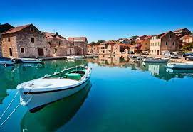

Hrvatska
U svakom kutku Hrvatske i njenih 1185 ostrva, u svakom godišnjem dobu, moguće je pronaći priču koja će Vam dočarati posebnost ove mediteranske zemlje. Obala joj je razudjena, sa mnoštvom uvala, ostrva i ostrvaca, a more je kristalno čisto pa je idealna za krstarenja i sve oblike sporta i rekreacije na moru i pod morem.